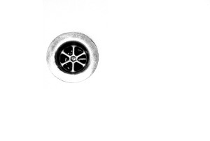

Побутові миючі та дезінфікуючі засоби: де компроміс між чистотою і здоров'ям?
По факту всі миючі засобів містять антимікробні компоненти, просто в одних випадках їх додають для активної дії, а в інших випадках це консерванти – для зберігання самого миючого засобу –щоб мікроби просто не пожерли вашу рідину для миття посуду.
Що відбувається, коли ми застосовуємо дезінфектант? Частина мікробів справді гине, але, як написали виробники одного доволі агреивного засобу, "убивает 99,9% бактерий".
А що таке ті 99,9% для мікробного світу? Це значить, що якщо ви наллєте такий засіб, наприклад, в йогурт, де було 10 мільйонів бактерій в 1 мл, то їх там залишиться... 10 тисяч в 1 мл – даруйте за брутальне пояснення.
І ті, які залишаться, будуть люті-люті - то вже повірте!
Інші засоби, які наче не мають дезінфікуючої дії, але містять консервант, аж такого не нароблять. Але, коли бактерії "нанюхають" якісь його залишки, це просто їм зайвий раз нагадає, що "треба бути напоготові". Це як нагримати на бродячого пса – наче не вбили, наче не побили, але він вже вас не любить і думає, може варто вкусити?
Стерильності все одно не буде
Нам доведеться з цим змиритися. Коли ми вбиваємо слабші мікроорганізми, то на їх місці обов'язково поселяться сильніші та агресивніші. Немає даних про те, що, наприклад, мило з антибактеріальним ефектом знижує ризик інфекцій , – як каже нам FDA. А про те, що антибактеріальне мило гнобить власну мікробіоту наших рук, мабуть, не має сенсу нагадувати.
А от антибіотикорезистентна зараза з'явиться
І це справді моторошно. Бо від чуми зараз ніхто не помирає. Помирають від якогось стафілокока, який живе на кожному із нас, але якого "дістало" і він став на стежку війни.
Мікроорганізми неймовірно швидко пристосовуються і в них є цілий арсенал для відбивання наших недолугих атак. Вони модифікують ліпідний шар своїх мембран, утворюють капсули, синтезують ферменти для знешкодження ворожої речовини, а коли в них активується ще й система ефлюксу – ховайся! Це такий механізм, коли бактерія просто випльовує ті неугодні токсичні молекули. І коли вона гарно навчилася це робити, то потім так само вчинятиме із антибіотиками. Шах і мат.
Однак, справедливо сказати, що виникнення перехресної резистентності не однаково ймовірне для різних класів дезінфектантів. Ось тут, наприклад, показали, що дія спирту (як етилового, так й ізопропілового) перехресної резистентності не викликала. Тому, як ми вже писали, від дезінфекції телефончика, який за день всюди побував і планує далі з вами в ліжко, відмовлятися, мабуть, не варто. Але це не означає, що оселю треба мити спиртом. Окрім того, що парами можна просто отруїтися, існує ще маса вагомих причин.
Наприклад –
Алергії, зайва вага, ураження легень
І це не лише через те, що "ця хімія" діє як подразник. Хоч це й істотний фактор.
Коли ми контактуємо із недостатньою кількістю мікроорганізмів, наша імунна система терпить брак досвіду і починає барахлити та кидатися на своїх.
Це особливо актуально для дітей. Адже для формування та визрівання імунної системи потрібні вчителі – які живуть в землі, на рослинах та тваринах. А на вимитій хлором підлозі не живуть. На цю тему є чимало цікавих досліджень, наприклад, показано, що навіть миття посуду в посудомиєчних машинах, було асоційовано із підвищеним ризиком виникнення дитячих алергій, ніж коли посуд миється вручну і, відповідно, не настільки ретельно.
Також навіть останні дослідження показали, що використання дезінфектантівпов'язане із ризиком виникнення зайвої ваги у дітей, тому що впливає на їх мікробіоту.
А після того, як ми прочитали ось це, то вже не можемо не згадати і про дезінфікування повітря , зокрема, із використанням ультразвукових зволожувачів. І це не просто підвищений ризик виникнення алергічних реакцій. У 2011 в Кореї померло більше трьох десятків людей через дисфункцію легень, спричинену дезінфектантами, в ультразвукових зволожувачах. Справа в тому, що із ультразвукових зволожувачів рідина вилітає, так би мовити, в нанорозмірній формі і проникає значно глибше в легені. Одним словом, краще не наливайте нічого зайвого у свій зволожувач, якщо у вас на руках немає вагомих доказів безпечності тих речовин.
Георгафічна карма
Все в житті повертається. І наші миючі засоби та дезінфектанти до нас, на жаль, також - каналізація, поверхневі та підземні води – водогони та криниці. Також дезінфектанти із стічних вод постійно гроблять активний мул на очисній станції у Бортничах (якщо мова йде про Київ) та є однією із причин того, що антибіотикорезистентність розвивається також і далеко за межами вашої оселі та міста.
Висновки:
Варто мінімізувати використання миючих засобів та дезінфектантів у своєму побуті. Ви можете бути здивовані, але звичайна вода також чудово миє підлогу та здатна впоратися із забрудненнями у більшості випадків;
При виборі миючих засобів читаємо склад та намагаємося обирати засоби без "антибактеріального ефекту", "наночастинок срібла" "активного хлору", тощо. Те ж саме стосується і засобів для власної гігієни. Щоб не заплутувати, ми не наводимо списку можливих назв – Ви достатньо легко зорієнтуєтеся, чи є речовина дезінфектантом, просто загугливши її назву.
Нехай Ваша оселя завжди буде затишною та не надто стерильною! :)
